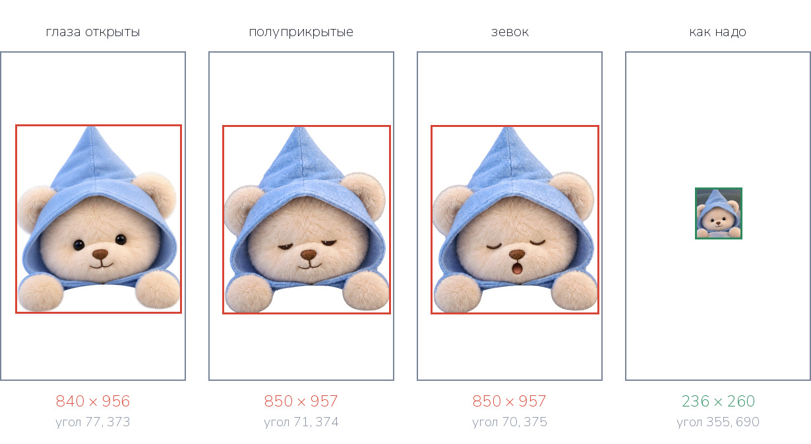
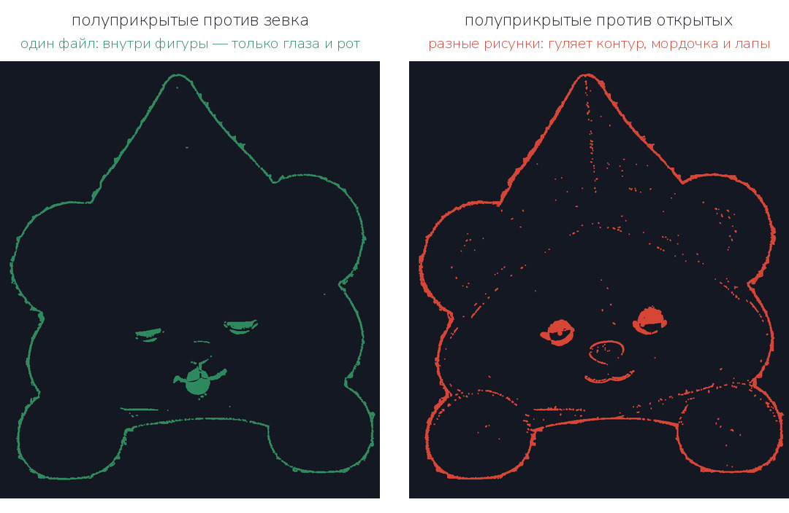
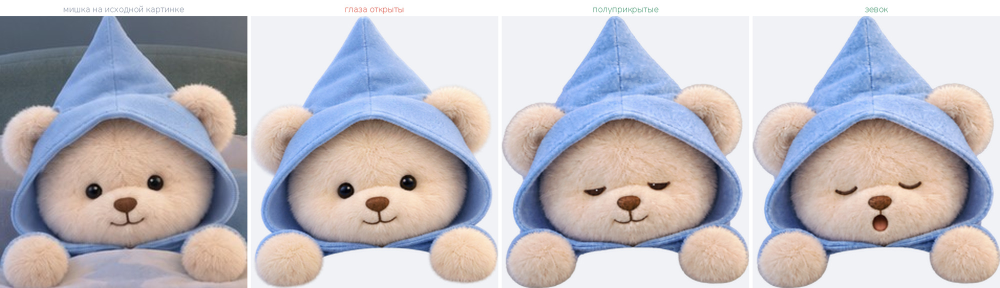
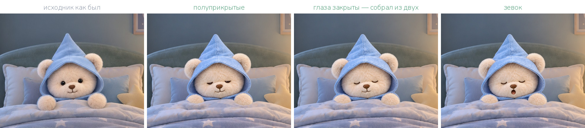

Пришли три варианта мишки и ещё одно одеяло. Проверил каждый файл.
Главное: полуприкрытые и зевок сделаны из одного файла — этого хватает,
чтобы собрать всё остальное. Больше от GPT ничего не нужно.
Приёмка
✓Полуприкрытые глаза и зевок
Сделаны из одного файла: внутри фигуры отличаются ровно глазами и ртом,
силуэт расходится на 0,3 процента. Это то, чего не хватало в первой
партии. Годятся.
✓Глаза закрыты — собрал сам, ничего просить не надо
Раз эти два файла совпадают, глаза можно взять у зевка (закрытые),
а рот у полуприкрытых (закрытый). Шва нет, проверил. Третий вариант
готов.
✕Глаза открыты — отдельный рисунок, и он не нужен
С остальными двумя не совпадает: силуэт расходится почти на 2 процента,
мордочка шире, нос крупнее, ткань капюшона другая. Но мишка в спальне
спит — открытые глаза в этой комнате не показываются вовсе. Выкидываем.
✕Одеяло присылать больше не надо
Новое расходится с исходной картинкой на 10 процентов непрозрачных
точек, старое — на 3,5. Оставляем то, что приняли в первой партии.
Размеры

Белый прямоугольник — холст 941 × 1672. Красная рамка — где на нём
оказалась фигура. Справа зелёным — где она должна быть.
Файл
Размер фигуры
Левый верхний угол
глаза открыты
840 × 956
77, 373
полуприкрытые
850 × 957
71, 374
зевок
850 × 957
70, 375
как надо
236 × 260
355, 690
Размер — не проблема. Фигура в 3,6 раза крупнее нужной, но все три
файла в одном масштабе, а это и требовалось. Привожу к 236 × 260 и ставлю
в точку 355, 690 одной командой на своей стороне.
Почему набор сходится

Светится то, чем файлы отличаются друг от друга. Слева — пара из одного
файла: внутри фигуры горят только глаза, нос и рот, а тонкая линия по краю
это волосок от пересохранения. Справа — пара из разных рисунков: горит
весь контур, мордочка и лапы.

Слева мишка с исходной картинки комнаты. Дальше присланные варианты в том
размере, в котором они встанут в комнату. У «открытых» другая ткань
капюшона, другая шерсть и шире мордочка — это другая игрушка.
Полуприкрытые и зевок — одна и та же.
Что получилось

Слои сложены: комната без мишки, мишка, передний край одеяла, свет
ночника. Первый кадр — исходная картинка, как она выглядела до разбора.
Дальше три состояния, между которыми мишка переключается.
Что дальше
Всё, что нужно для оживления спальни, теперь есть:
Слой
Откуда
room.png — комната без мишки
первая партия
blanket_front.png — передний край одеяла
первая партия
lamp_glow.png — свет ночника
первая партия
bear_eyes_half.png — полуприкрытые глаза
вторая партия
bear_yawn.png — зевок
вторая партия
bear_eyes_closed.png — глаза закрыты
собрано из двух предыдущих
Из этого собирается:
Дыхание — слой мишки ходит вверх-вниз на один-два процента
высоты, цикл около четырёх секунд. Низ уходит под передний край
одеяла, поэтому шва не видно.
Сонное моргание — подмена между полуприкрытыми и закрытыми
глазами, с неровными паузами, чтобы не читалось как метроном.
Зевок — редкая короткая подмена на третий вариант.
Свет ночника — еле заметно дышит вместе с мишкой.
Буквы z над кроватью уже работают, остаются как есть.
Жду команды. Файлы приняты и лежат у меня, но в приложение я ничего
не ставлю без твоего слова. Скажешь — соберу и выложу в живое приложение.